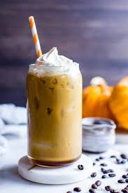

Iced Pumpkin Spice Latte

Description
Looking to make your favorite starbucks drink at home? Well look no further.
Enjoy a delicious iced pumpkin spice latte at home without all of the fuss.
Ingredients
- 1 shot brewed espresso
- 1 cup whole milk
- 2 tablespoons maple syrup, or to taste
- 2 tablespoons pumpkin puree, or to taste
- 1/2 teaspoon vanilla extract
- 1/4 teaspoon pumpkin pie spice, or to taste
- 1 pinch salt
- ice as needed
- whipped cream (optional)
Steps
-
Place espresso, milk, maple syrup, pumpkin,
vanilla, pumpkin pie spice, and salt into the cup
of a high-speed blender. Blend on High speed until
fully smooth and combined, about 30 seconds.
-
Fill a glass with ice. Pour pumpkin mixture over ice
and serve cold. If desired, serve topped with whipped
cream and an extra sprinkle of pumpkin pie spice.
Home